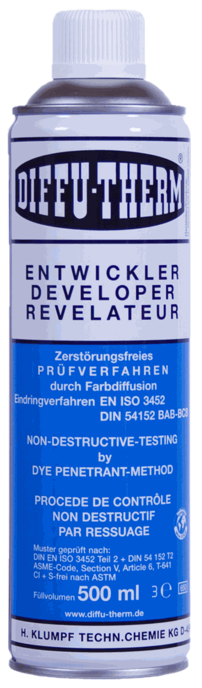

Fast Group Engineering cung cấp Diffu-Therm chính hãng Đức tại Việt Nam cho nhu cầu kiểm tra không phá hủy NDT. Bài viết này tập trung vào EN 10204 3.1B và cách chuyển nhu cầu kỹ thuật thành RFQ rõ ràng.


Liên kết nên mở tiếp
- Mã sản phẩm hoặc ảnh nhãn.
- Tiêu chuẩn, vật liệu, nhiệt độ.
- Quy cách, số lượng, lead time.
Trong gần như mọi RFQ vật tư NDT cho dự án dầu khí, chế tạo bình chịu áp hoặc đường ống, có một dòng mà bên mua hay chép lại mà không chắc mình đang yêu cầu gì: "Material certificate EN 10204-3.1B required".
Hiểu sai dòng này gây ra hai loại thiệt hại. Bên mua không yêu cầu đúng loại thì đến lúc nghiệm thu bị bác hồ sơ, phải xin bổ sung chứng từ cho lô hàng đã dùng hết — thường là không thể. Bên mua yêu cầu quá tay thì đội giá và kéo dài lead time không cần thiết.
Bốn loại chứng từ trong EN 10204
EN 10204 phân loại chứng từ theo ai xác nhận và xác nhận trên cơ sở gì. Đây là hai câu hỏi khác nhau, và chính chỗ này hay bị nhầm.

Thuốc hiện hình, rửa được. Chất thẩm thấu PT Diffu-Therm dùng làm mã tham chiếu khi đối chiếu yêu cầu kỹ thuật và lập RFQ.
| Loại | Tên gọi | Ai cấp | Cơ sở xác nhận |
|---|---|---|---|
| 2.1 | Tuyên bố tuân thủ | Nhà sản xuất | Tuyên bố sản phẩm phù hợp đơn hàng, không kèm kết quả thử nghiệm nào |
| 2.2 | Báo cáo thử nghiệm | Nhà sản xuất | Kèm kết quả thử nghiệm, nhưng là thử nghiệm không chuyên biệt — trên mẫu đại diện của quá trình sản xuất, không phải trên chính lô giao hàng |
| 3.1 | Chứng chỉ nghiệm thu 3.1 | Nhà sản xuất, người ký độc lập với bộ phận sản xuất | Kết quả thử nghiệm chuyên biệt trên chính lô hàng giao |
| 3.2 | Chứng chỉ nghiệm thu 3.2 | Nhà sản xuất và bên thứ ba (đại diện bên mua hoặc tổ chức giám định) cùng ký | Thử nghiệm chuyên biệt trên lô hàng, có bên thứ ba chứng kiến |
Điểm phân định quan trọng nhất nằm giữa 2.2 và 3.1:
- 2.2 trả lời câu hỏi "dòng sản phẩm này nói chung có đạt không?"
- 3.1 trả lời câu hỏi "chính những thùng hàng đang nằm trong kho của tôi có đạt không?"
Với vật tư NDT, khác biệt này rất thật. Chất thẩm thấu và bột từ là hóa chất pha theo mẻ; một chứng chỉ 2.2 lấy từ mẻ sản xuất tháng trước không nói gì về mẻ anh vừa nhận.
Chữ B trong "3.1B" nghĩa là gì
Ký hiệu 3.1B là cách gọi theo bản EN 10204:1991 cũ, trong đó chứng chỉ 3.1 được chia thành 3.1A, 3.1B và 3.1C tùy theo ai ký xác nhận.
Bản EN 10204:2004 đã bỏ cách chia này: nay chỉ còn 3.1 và 3.2. Nội dung mà 3.1B cũ mô tả tương ứng với 3.1 của bản hiện hành.
Nhưng trong thực tế ngành, cách gọi "3.1B" vẫn sống dai dẳng trong các mẫu spec, mẫu ITP và mẫu RFQ được sao chép qua hàng chục dự án. Vì vậy:
- Khi thấy dự án yêu cầu 3.1B, gần như chắc chắn họ đang muốn 3.1 theo bản 2004.
- Không cần tranh cãi về cách gọi. Ghi vào RFQ theo đúng chữ mà spec dự án dùng, và ghi thêm "tương đương EN 10204:2004 Type 3.1" để hai bên khỏi hiểu nhầm.
Khi nào thực sự cần 3.1 với vật tư NDT
Không phải mọi đơn hàng vật tư NDT đều cần chứng chỉ 3.1. Yêu cầu này thường xuất hiện khi:
1. Vật liệu kiểm tra là thép không gỉ austenit, titan hoặc hợp kim gốc nickel. Đây là lý do phổ biến nhất. Với những vật liệu này, tồn dư lưu huỳnh và halogen từ vật tư NDT có thể gây ăn mòn ứng suất hoặc giòn ở nhiệt độ cao. Dự án sẽ yêu cầu chứng chỉ ghi rõ hàm lượng lưu huỳnh và halogen của chính lô hàng, và đó là chứng chỉ 3.1 chứ không phải SDS.
Đây cũng là chỗ hay hiểu nhầm nhất: SDS không phải chứng chỉ lô hàng. SDS là tài liệu an toàn cho một sản phẩm, dùng chung cho mọi lô. Nộp SDS thay cho 3.1 sẽ bị bác.
2. Chi tiết thuộc phạm vi ASME hoặc quy phạm tương đương. Bình chịu áp, đường ống công nghệ, kết cấu chịu tải theo quy phạm — hồ sơ nghiệm thu thường truy xuất đến từng vật tư tiêu hao dùng trong quá trình kiểm tra.
3. Khách hàng cuối là chủ đầu tư lớn có ITP riêng. Vietsovpetro, PTSC, các nhà máy lọc hóa dầu và nhiệt điện thường có Inspection & Test Plan quy định sẵn loại chứng từ cho từng hạng mục, kể cả vật tư tiêu hao.
4. Hàng dùng cho công việc sẽ bị bên thứ ba giám định. Khi có giám định độc lập, chứng từ 2.2 hầu như luôn bị hỏi lại.
Ngược lại, với bảo trì nội bộ, kiểm tra định kỳ không thuộc quy phạm, hoặc xưởng cơ khí thông thường, chứng chỉ 2.2 hoặc thậm chí SDS kèm CO/CQ thường là đủ. Yêu cầu 3.1 trong những trường hợp này chỉ làm tăng giá và kéo dài thời gian giao hàng.
Điều bắt buộc phải biết: 3.1 không xin bổ sung được sau
Đây là điểm khiến sai lầm này tốn kém.
Chứng chỉ 3.1 gắn với kết quả thử nghiệm trên chính lô hàng. Việc thử nghiệm đó phải được thực hiện tại thời điểm sản xuất hoặc xuất xưởng lô hàng, và mẫu lưu phải còn.
Hệ quả: nếu anh đặt hàng mà không yêu cầu 3.1, hàng đã về kho và đã dùng một phần, rồi đến khi nghiệm thu mới phát hiện thiếu chứng từ — thì gần như không có cách nào cấp bù. Phương án duy nhất thường là đặt lô mới có chứng chỉ và làm lại phần kiểm tra, tức là trả giá bằng cả vật tư lẫn thời gian lẫn nhân công.
Vì vậy nguyên tắc thực hành là: khi còn phân vân, hỏi rõ ITP dự án trước khi đặt hàng, không đặt trước rồi tính sau.
Cách ghi đúng vào RFQ
Một dòng yêu cầu chứng từ đầy đủ nên có bốn thành phần:
"Yêu cầu chứng chỉ nghiệm thu EN 10204 Type 3.1 (tương đương 3.1B theo cách gọi cũ), ghi rõ hàm lượng lưu huỳnh và halogen tổng, theo từng lô sản xuất, kèm SDS bản tiếng Anh."
Bốn thành phần đó là:
- Loại chứng từ — 3.1, và nêu cả cách gọi cũ nếu spec dự án dùng
- Nội dung cần có trên chứng từ — với vật tư NDT thường là lưu huỳnh và halogen; ghi rõ để nhà sản xuất biết phải đưa chỉ tiêu nào vào
- Phạm vi — theo lô sản xuất
- Tài liệu đi kèm — SDS và ngôn ngữ
Thiếu thành phần số 2 là lỗi hay gặp nhất: chứng chỉ 3.1 về đến nơi nhưng không có chỉ tiêu lưu huỳnh/halogen, và vẫn không dùng được cho hồ sơ.
Về vật tư Diffu-Therm
Diffu-Therm cấp được chứng chỉ nghiệm thu theo EN 10204-3.1B khi có yêu cầu — đây là thông tin hãng công bố trong tài liệu kỹ thuật của dòng sản phẩm thẩm thấu.
Vì lý do đã nêu ở trên, yêu cầu này phải nêu ngay trong RFQ, trước khi hàng được chuẩn bị xuất xưởng. Fast Group không thể xin bổ sung sau khi hàng đã rời kho hãng.
Checklist trước khi gửi RFQ
- Đã đọc ITP hoặc spec dự án để biết yêu cầu chứng từ thật sự là gì
- Xác định vật liệu kiểm tra — có thép không gỉ austenit, titan hay hợp kim nickel không
- Nếu có, đã ghi rõ cần chỉ tiêu lưu huỳnh và halogen trên chứng chỉ
- Đã ghi loại chứng từ theo đúng chữ mà spec dự án dùng
- Đã ghi ngôn ngữ SDS cần thiết
- Đã xác nhận CO/CQ có cần không (khác với chứng chỉ nghiệm thu)
- Đã kiểm tra lead time — chứng chỉ 3.1 có thể kéo dài thời gian giao hàng
Nếu chưa chắc dự án cần loại nào, gửi cho Fast Group phần yêu cầu chứng từ trong spec, sẽ đối chiếu được nhanh hơn là đoán.
Nhận báo giá Diffu-Therm
Gửi mã hàng, số lượng, quy cách đóng gói và yêu cầu chứng từ qua email minhduc@fastgroup.vn hoặc Zalo/điện thoại (+84) 938 888 958.